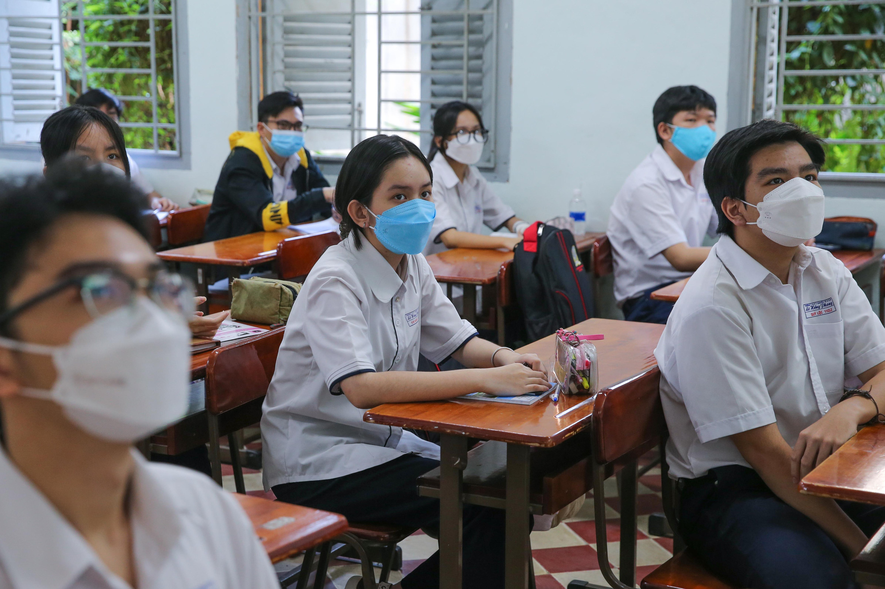

⚠️ | MỘT SỐ LƯU Ý KHI HỌC SINH ĐI HỌC TRỞ LẠI |
04_10_2021
✅ Khối 11 và khối 12 học buổi sáng, vào lớp lúc 6h45’. Khối 10 học buổi chiều, vào lớp lúc 12h45’.
✅ Học sinh đi học bắt buộc phải đeo khẩu trang, mang theo nước uống cá nhân (chuẩn bị trước ở nhà) và thực hiện nghiêm túc thông điệp 5K. Học sinh được đo thân nhiệt trước khi vào lớp. ‼️
✅ Thường xuyên sát khuẩn tay bằng dung dịch sát khuẩn.
✅ Tuyệt đối không tập trung đông người trước khu vực cổng trường khi đến trường và ra về.
✅ Khi giải lao thực hiện giãn cách; ra chơi theo lớp, vào theo lớp. Hết tiết 1 giải lao 5 phút tại lớp, hết tiết 2 ra chơi 10 phút đối với lớp học phòng lẻ, hết tiết 3 ra chơi 10 phút đối với lớp học phòng chẵn, hết tiết 4 giải lao 5 phút tại lớp. Không đi lại giữa các phòng học, không ra ngoài khuôn viên trường mà không có lý do chính đáng. Ra ngoài thật sự cần thiết.
✅ Trong giờ học HS phải thực hiện đeo khẩu trang trong suốt buổi học. Khi ra về phải đi theo thứ tự, không chen lấn, thực hiện tốt việc giữ khoảng cách giữa người với người theo quy định.
✅ Cuối mỗi buổi học, mỗi lớp học phải bố trí người lau chùi bàn ghế, tay vịn hành lang bằng xà phòng sát khuẩn theo quy định.
✅ Không đi xe máy đến trường. Để xe đúng nơi quy định.
✅ Không tiếp xúc với người lạ, người từ vùng dịch trở về.
✅ Học sinh ở trong vùng phong tỏa,diện F1,F2 cách ly tại nhà báo với GVCN.
Rất mong mọi người chấp hành tốt❗️
